<!doctype html>
<html lang="ja"><head><meta charset="utf-8">
<meta name="viewport" content="width=device-width,initial-scale=1">
<title>レース競技に参加するドライバーの装備品に関する細則｜JAF モータースポーツ諸規則ビューア（非公式）</title>
<meta name="description" content="レース競技に参加するドライバーの装備品に関する細則（2026年 JAF国内競技車両規則／第5編 細則）の全文。第5編 細則／第3章 ドライバーの装備／第2条 耐火炎被服／第3章 ドライバーの装備品／第3条 前方への当部の動きの抑制(FHR)">
<link rel="canonical" href="https://jp.motorsports-regulations.org/doc/jaf_05_saisoku_race_soubi_20260101-121453">
<meta property="og:url" content="https://jp.motorsports-regulations.org/doc/jaf_05_saisoku_race_soubi_20260101-121453">
<meta property="og:type" content="article">
<meta property="og:site_name" content="JAF モータースポーツ諸規則ビューア（非公式）">
<meta property="og:locale" content="ja_JP">
<meta property="og:title" content="レース競技に参加するドライバーの装備品に関する細則">
<meta property="og:description" content="レース競技に参加するドライバーの装備品に関する細則（2026年 JAF国内競技車両規則／第5編 細則）の全文。第5編 細則／第3章 ドライバーの装備／第2条 耐火炎被服／第3章 ドライバーの装備品／第3条 前方への当部の動きの抑制(FHR)">
<style>
:root{--fg:#111827;--muted:#6b7280;--line:#e5e7eb;--accent:#1d4ed8;--bg:#fff}
@media (prefers-color-scheme:dark){:root{--fg:#e5e7eb;--muted:#9ca3af;--line:#374151;--accent:#93c5fd;--bg:#0f172a}}
body{margin:0;background:var(--bg);color:var(--fg);font-family:"Noto Sans JP",system-ui,sans-serif;line-height:1.9}
.doc{max-width:46rem;margin:0 auto;padding:2rem 1.25rem 6rem}
h1{font-size:1.6rem;line-height:1.5;margin:0 0 .25rem}
.meta{color:var(--muted);font-size:.8rem;margin-bottom:2rem}
h2,h3,h4,h5{line-height:1.6;margin:2.2em 0 .6em;scroll-margin-top:4rem}
h2{font-size:1.25rem;border-left:4px solid var(--accent);padding-left:.6rem}
h3{font-size:1.1rem}
h4{font-size:1rem;color:var(--accent)}
p{margin:0 0 1em;text-align:justify}
figure{margin:1.8em 0;padding:.75rem;border:1px solid var(--line);border-radius:.5rem}
figure img{display:block;width:100%;height:auto}
figcaption{margin-top:.5rem;font-size:.85rem;color:var(--muted);text-align:center}
.tablewrap{overflow-x:auto;margin:1.5em 0}
table{border-collapse:collapse;font-size:.9rem;min-width:100%}
th,td{border:1px solid var(--line);padding:.35em .6em;vertical-align:top}
.pagemark{float:right;font-size:.7rem;color:var(--muted);user-select:none}
nav.toc{border:1px solid var(--line);border-radius:.5rem;padding:1rem 1.25rem;margin-bottom:2.5rem;font-size:.9rem}
nav.toc ol{list-style:none;margin:0;padding:0}
nav.toc a{color:inherit;text-decoration:none}
nav.toc a:hover{color:var(--accent);text-decoration:underline}
nav.toc .l1{padding-left:0;font-weight:700}
nav.toc .l2{padding-left:1rem}
nav.toc .l3{padding-left:2rem}
nav.toc .l4{padding-left:3rem;color:var(--muted)}
.warn{background:#fef3c7;color:#78350f;border-radius:.4rem;padding:.6rem .9rem;font-size:.85rem;margin-bottom:1.5rem}
.src{border:1px solid var(--line);border-left:3px solid var(--accent);border-radius:.4rem;padding:.6rem .9rem;font-size:.8rem;line-height:1.8;color:var(--muted);margin:0 0 2rem}
.src strong{color:var(--fg)}
.docfoot{margin-top:4rem;padding-top:1rem;border-top:1px solid var(--line);font-size:.78rem;line-height:1.9;color:var(--muted)}
</style>
</head><body><article class="doc">
<h1>レース競技に参加するドライバーの装備品に関する細則</h1>
<p class="meta">2026年 JAF国内競技車両規則 ／ 第5編 細則 ／ アップロード日 2026-06-10 ／ 13ページ ／ <a href="https://motorsports.jaf.or.jp/-/media/1/3375/3379/3400/3462/3464/3485/jaf_05_saisoku_race_soubi_20260101.pdf" rel="nofollow">JAF 原本 PDF</a></p>
<p class="src"><strong>JAF の公式サイトではありません。</strong>JAF が公開する PDF を自動変換した非公式の検索用アーカイブです。記載内容は必ず <a href="https://motorsports.jaf.or.jp/-/media/1/3375/3379/3400/3462/3464/3485/jaf_05_saisoku_race_soubi_20260101.pdf" rel="nofollow">JAF の原本 PDF</a> で出典をご確認ください。 <a href="https://jp.motorsports-regulations.org/doc/jaf_05_saisoku_race_soubi_20260101-121453">検索と AI 質問つきのビューアで開く</a></p>
<nav class="toc"><ol>
<li class="l1"><a href="#第-編-細則">第５編　細則</a></li>
<li class="l3"><a href="#レース競技に参加するドライバーの装備品に関する細則">レース競技に参加するドライバーの装備品に関する細則</a></li>
<li class="l4"><a href="#装備品の種類">１．装備品の種類</a></li>
<li class="l4"><a href="#適用">２．適用</a></li>
<li class="l4"><a href="#競技用ヘルメット">３．競技用ヘルメット</a></li>
<li class="l4"><a href="#耐火炎レーシングスーツ">４．耐火炎レーシングスーツ</a></li>
<li class="l2"><a href="#第-章-ドライバーの装備">第３章　ドライバーの装備</a></li>
<li class="l4"><a href="#第-条-耐火炎被服">第２条　耐火炎被服</a></li>
<li class="l4"><a href="#耐火炎レーシングシューズ">５．耐火炎レーシングシューズ</a></li>
<li class="l4"><a href="#耐火炎レーシンググローブ">６．耐火炎レーシンググローブ</a></li>
<li class="l4"><a href="#耐火炎バラクラバ-目出し帽">７．耐火炎バラクラバ（目出し帽）</a></li>
<li class="l4"><a href="#耐火炎アンダーウェア-耐火炎ソックス">８．耐火炎アンダーウェア、耐火炎ソックス</a></li>
<li class="l4"><a href="#頭部および頸部の保護装置-システム">１０．頭部および頸部の保護装置（ＦＨＲシステム）</a></li>
<li class="l2"><a href="#第-章-ドライバーの装備品">第３章　ドライバーの装備品</a></li>
<li class="l4"><a href="#第-条-前方への当部の動きの抑制-FHR">第３条　前方への当部の動きの抑制（FHR）</a></li>
<li class="l4"><a href="#使用の条件">３.２）使用の条件</a></li>
<li class="l4"><a href="#8860-2010-および8860-2018は有効である">8860-2010、および8860-2018は有効である。</a></li>
</ol></nav>
<h2 id="第-編-細則"><span class="pagemark" id="p1">P.1</span>第５編　細則</h2>
<h4 id="レース競技に参加するドライバーの装備品に関する細則"><span class="pagemark" id="p2">P.2</span>レース競技に参加するドライバーの装備品に関する細則</h4>
<p>装備品は、乗員の保護が最大の目的であり、モータースポーツの安全性をより高めるため各種の装備が必要となる。</p>
<p>競技運転者は、自らを保護するという認識のもと、モータースポーツに適した装備品を装着する必要がある。</p>
<p>ＪＡＦおよび/またはＦＩＡは、競技用ヘルメット、耐火炎レーシングスーツなど主な装備品について公認しているので、参加する競技に適した装備品を選定すること。きつ過ぎる着衣は保護能力を引き下げてしまうので、着用者はきつ過ぎない着衣を身に着けること。</p>
<p>選手権統一規則、競技会特別規則、各サーキットが独自に定めている規則等が本細則より厳しい装備品（種類、仕様等）を指定している場合は、それに従うこと。</p>
<h5 id="装備品の種類">１．装備品の種類</h5>
<p>１）競技用ヘルメット</p>
<p>２）頭部および頸部の保護装置（FHRシステム）</p>
<p>３）レーシングスーツ（耐火炎レーシングスーツ）</p>
<p>４）アンダーウェア（耐火炎アンダーウェア）</p>
<p>５）バラクラバ（目出し帽）（耐火炎バラクラバ）</p>
<p>６）ソックス（耐火炎ソックス）</p>
<p>７）レーシングシューズ（耐火炎シューズ）</p>
<p>８）レーシンググローブ（耐火炎グローブ）</p>
<h5 id="適用">２．適用</h5>
<p>１）下表に従い装備品を着用すること。</p>
<p>◎：着用義務　　○：着用推奨（国際競技では義務付け）</p>
<div class="tablewrap"><table><tr><td>競技種別</td><td>競技用
ヘルメット</td><td>頭部および
頸部の保護装置
（ＦＨＲシステム）</td><td>耐火炎
レーシングスーツ</td><td>耐火炎
アンダーウェア</td><td>耐火炎
バラクラバ</td><td>耐火炎
ソックス</td><td>耐火炎
シューズ</td><td>耐火炎
グローブ</td></tr><tr><td>レース
競技</td><td>◎</td><td>◎</td><td>◎</td><td>○</td><td>◎</td><td>◎</td><td>◎</td><td>◎</td></tr></table></div>
<h5 id="競技用ヘルメット">３．競技用ヘルメット</h5>
<p>１）レース競技では国際モータースポーツ競技規則付則Ｊ項のテクニカルリストNo.25、No.33、No.49、No.69、No.107に記載された基準に適合したヘルメットを使用すること。</p>
<p><span class="pagemark" id="p3">P.3</span>国際モータースポーツ競技規則付則Ｊ項のテクニカルリストNo.25に記載された以下の何れかの基準に合致したヘルメット</p>
<figure>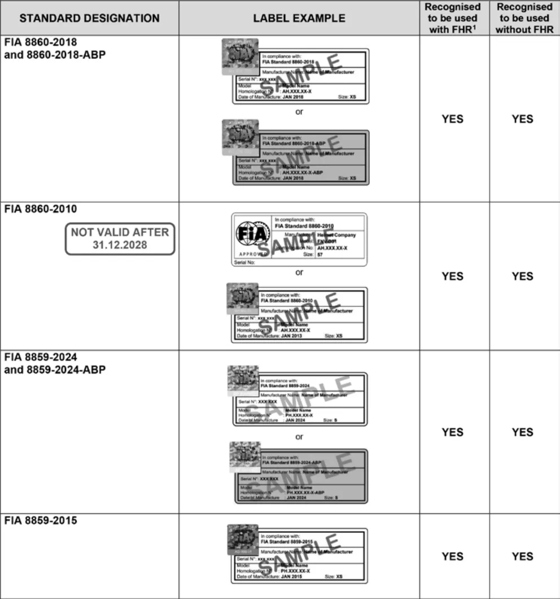</figure>
<p>FIA-recognised Standards for helmets to be used together with FHR systems. Please check additional requirements regarding helmet use in Chapter III - Drivers’ Equipment of Appendix L to the FIA International Sporting Code.</p>
<p>（FIAに承認されたヘルメットにはFHRシステムが併用されること。</p>
<p>FIA国際競技規則付則L項第３章「ドライバーの装備品」にあるヘルメットの使用に関する追加要件を確認すること。）</p>
<p>２）車両形式、競技形式などによるヘルメット種別の適用</p>
<p>（１）オープンシーター（フォーミュラカー、スポーツカー等）</p>
<p>バイザー付のフルフェイス型ヘルメットを着用すること。（ただし、競技会特別規則で特別の定めがある場合を除く。）</p>
<p>（２）クローズドカー（ツーリングカー、スポーツカー等）</p>
<p>バイザー付のフルフェイス型ヘルメットの着用を推奨する。（ただし、競技会特別規則で特別の定めがある場合を除く。）</p>
<p>（３）競技中に燃料補給を伴う競技</p>
<p>バイザー付のフルフェイス型ヘルメットを着用すること。（ただし、競技会特別規則で特別の定めがある場合を除く。）</p>
<p>３）改造、加工の禁止</p>
<p>ヘルメット製造者が認めた方法および当該ヘルメット型番に認証を与えた国際モータースポーツ競技規則付則Ｊ項のテクニカルリストに記載された基準機構が認めた方法を除き、ヘルメットに対し一切の改造、加工をしてはならない。</p>
<p><span class="pagemark" id="p4">P.4</span>４）保護能力</p>
<p>（１）塗料はヘルメットの帽体の素材と反応し、その保護能力に影響を与える可能性がある。ヘルメット製造者が定めたヘルメットの装飾、塗装に関する制限事項、あるいは指導要綱に従うこと。</p>
<p>（２）ヘルメットに強い衝撃を受けた場合、外観に異常がなくても保護能力が劣化している場合もある。ヘルメット製造者、あるいはヘルメット製造者が指定した工場、代理店などに専門的判断を委ねること。</p>
<p>５）使用限度</p>
<p>製造後「１０年」を経過したものを使用してはならない。</p>
<h5 id="耐火炎レーシングスーツ">４．耐火炎レーシングスーツ</h5>
<p>１）レース競技では競技中常に、ＪＡＦおよび/またはＦＩＡ公認の耐火炎レーシングスーツの着用が義務付けられる。</p>
<p>（１）ＪＡＦ公認耐火炎レーシングスーツ</p>
<p>ａ．ＪＡＦ公認耐火炎レーシングスーツは、以下リストの通り。</p>
<p>FIA基準8856-2000に従ったJAF公認耐火炎レーシングスーツのリスト</p>
<p>（2025年10月現在）</p>
<div class="tablewrap"><table><tr><th>JAF公認番号</th><th>ＦＩＡ
公認番号</th><th>型 式</th><th>製 造 者 名</th></tr><tr><td>JAF-SP-EQ-124-02</td><td>RS.036.02</td><td>ARD-024 Type SX-DW</td><td>5ZIGENインターナショナル㈱</td></tr><tr><td>JAF-SP-EQ-125-04</td><td>RS.079.05</td><td>PRO FORMULA（LE-150）</td><td>㈱レアーズ</td></tr><tr><td>JAF-SP-EQ-126-04</td><td>RS.089.05</td><td>SUPER PRO（LE-110）</td><td>〃</td></tr><tr><td>JAF-SP-EQ-129-04</td><td>RS.062.04</td><td>DES-005</td><td>㈲ベア</td></tr><tr><td>JAF-SP-EQ-131-05</td><td>RS.077.04</td><td>SUPER PRO（LE-120）</td><td>㈱レアーズ</td></tr><tr><td>JAF-SP-EQ-132-05</td><td>RS.078.04</td><td>PRO FORMULA （LE-140）</td><td>〃</td></tr><tr><td>JAF-SP-EQ-137-05</td><td>RS.081.05</td><td>ARD-024 Type SX-CD</td><td>5ZIGENインターナショナル㈱</td></tr><tr><td>JAF-SP-EQ-138-05</td><td>RS.080.05</td><td>ザマンレーシングスーツ（0770）</td><td>山田辰㈱</td></tr><tr><td>JAF-SP-EQ-139-05</td><td>RS.086.05</td><td>Firelex F-32N</td><td>㈱グループ・エム</td></tr><tr><td>JAF-SP-EQ-140-05</td><td>RS.090.05</td><td>ARD-010 Type FZ-R</td><td>5ZIGENインターナショナル㈱</td></tr><tr><td>JAF-SP-EQ-141-05</td><td>RS.091.05</td><td>ARD-022 Type ZX-R</td><td>〃</td></tr><tr><td>JAF-SP-EQ-145-05</td><td>RS.093.05</td><td>ザマンレーシングスーツ TYPE-II（0742）</td><td>山田辰㈱</td></tr><tr><td>JAF-SP-EQ-150-05</td><td>RS.112.06</td><td>JURAN 2000</td><td>㈱タニダ</td></tr><tr><td>JAF-SP-EQ-174-08</td><td>RS.150.08</td><td>JURAN RS-03</td><td>〃</td></tr><tr><td>JAF-SP-EQ-175-08</td><td>RS.157.08</td><td>ARD-110 CHEVRON X</td><td>5ZIGENインターナショナル㈱</td></tr><tr><td>JAF-SP-EQ-182-09</td><td>RS.170.09</td><td>THE MAN SPIRIT TYPE-X</td><td>山田辰㈱</td></tr><tr><td>JAF-SP-EQ-185-11</td><td>RS.208.11</td><td>Silverstone RACING BROOKLANDS（RSN-100）</td><td>㈲アールエーシー</td></tr><tr><td>JAF-SP-EQ-186-11</td><td>RS.209.11</td><td>Silverstone RACING BECHETTS（RSN-200）</td><td>〃</td></tr><tr><td>JAF-SP-EQ-189-13</td><td>RS.239.13</td><td>Firelex ZERO-3X</td><td>㈱グループ・エム</td></tr><tr><td>JAF-SP-EQ-190-13</td><td>RS.240.13</td><td>コンペティションギヤ レーシングスーツStage 200</td><td>㈱エイチ・ピー・アイ</td></tr><tr><td>JAF-SP-EQ-191-13</td><td>RS.242.13</td><td>コンペティションギヤ レーシングスーツStage 300</td><td>〃</td></tr><tr><td>JAF-SP-EQ-192-13</td><td>RS.246.13</td><td>Silverstone RACINGRACING SUIT ABBEY（RSN-300）</td><td>㈲アールエーシー</td></tr><tr><td>JAF-SP-EQ-193-15</td><td>RS.274.15</td><td>JURAN Racing Pro5000α</td><td>㈱タニダ</td></tr><tr><td>JAF-SP-EQ-194-15</td><td>RS.275.15</td><td>JURAN Racing Pro6000</td><td>〃</td></tr><tr><td>JAF-SP-EQ-195-16</td><td>RS.283.16</td><td>PROGRESS A</td><td>㈱レアーズ</td></tr><tr><td>JAF-SP-EQ-196-16</td><td>RS.291.16</td><td>ARD-1000 PROGEAR TYPE-1 Genisys</td><td>5ZIGENインターナショナル㈱</td></tr><tr><td>JAF-SP-EQ-197-16</td><td>RS.292.16</td><td>ARD-1100 PROGEAR TYPE-SX LT</td><td>〃</td></tr><tr><td>JAF-SP-EQ-198-16</td><td>RS.293.16</td><td>ARD-1150 PROGEARTYPE-TX</td><td>〃</td></tr><tr><td>JAF-SP-EQ-200-18</td><td>RS.338.18</td><td>Stage-100</td><td>㈱エイチ・ピー・アイ</td></tr><tr><td>JAF-SP-EQ-201-18</td><td>RS.343.18</td><td>JURAN 2000α</td><td>㈱タニダ</td></tr><tr><td>JAF-SP-EQ-202-19</td><td>RS.348.19</td><td>Firelex ZERO-B</td><td>㈱グループ・エム</td></tr></table></div>
<p><span class="pagemark" id="p5">P.5</span>FIA基準8856-2018に従ったJAF公認耐火炎レーシングスーツのリスト（2025年10月現在）</p>
<div class="tablewrap"><table><tr><td>ＪＡＦ公認番号</td><td>ＦＩＡ
公認番号</td><td>型 式</td><td>製 造 者 名</td></tr><tr><td>JAF-SP-EQ-203-20</td><td>DC.093.20-O</td><td>Stage-500</td><td>㈱エイチ・ピー・アイ</td></tr><tr><td>JAF-SP-EQ-204-21</td><td>DC.165.21-O</td><td>Firelex/ZERO-B18</td><td>㈱グループ・エム</td></tr><tr><td></td><td>DC.215.22-O</td><td>JURAN RACIG PRO7000</td><td>㈱タニダ</td></tr><tr><td></td><td>DC.225.22-O</td><td>ARD/EASY GAME.01</td><td>5ZIGENインターナショナル㈱</td></tr><tr><td></td><td>DC.226.22-O</td><td>ARD/FULLSWING.01</td><td>〃</td></tr><tr><td></td><td>DC.236.22-O</td><td>PROMINENT A</td><td>㈱レアーズ</td></tr></table></div>
<p>ｂ．ＪＡＦ公認耐火炎レーシングスーツには、下記のラベルがスーツの見やすい部分に貼付されている。ＪＡＦ公認品の証明であるので、取り外さないこと。</p>
<figure>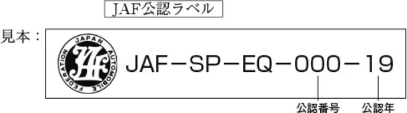</figure>
<p>（２）ＦＩＡ公認耐火炎レーシングスーツ</p>
<p>ａ．次の基準に合致した耐火炎レーシングスーツ</p>
<p>‐ＦＩＡ基準8856-2000</p>
<p>‐ＦＩＡ基準8856-2018</p>
<p>ｂ．ＦＩＡ公認耐火炎レーシングスーツには、下記のラベルおよびホログラムがスーツの見やすい部分に貼付されている。ＦＩＡ公認品の証明であるので、取り外さないこと。</p>
<p>※　ＦＩＡ基準8856-2000に従って2012年12月31日以前に製造され、ＦＩＡホログラムの貼り付けのない製品の国内格式以下の競技会における有効期限は、2024年12月31日迄である。</p>
<p>FIA基準8856-2000に従ったFIA公認耐火炎レーシングスーツのラベルおよびホログラム</p>
<figure>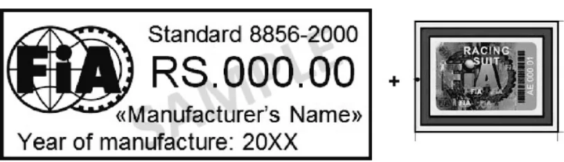</figure>
<p>（2013年1月1日以降のラベル）</p>
<p>・ラベルサイズ：100mm×40mm</p>
<p>・基準名、製造者名、製造年の文字高：５mm</p>
<p>・公認番号の文字高：９mm</p>
<p>・ＦＩＡロゴはＦＩＡから入手可能</p>
<p><span class="pagemark" id="p6">P.6</span>FIA基準8856-2018に従ったFIA公認耐火炎レーシングスーツのラベル</p>
<figure>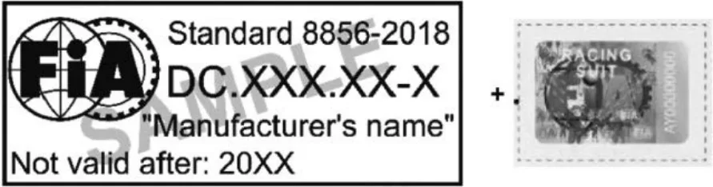</figure>
<p>・ラベルサイズ：100mm×40mm</p>
<p>襟の色がライトカラーの場合、使用する糸は黒。ダークカラーの場合、使用する糸は白。</p>
<p>・基準名、製造者名、有効期間満了年の文字高：5mm</p>
<p>・公認番号の文字高：7mm</p>
<p>・ＦＩＡロゴサイズ（FIAから入手可能）：33ｍｍ×22.3ｍｍ</p>
<p>２）耐火炎レーシングスーツに施される刺繍または縫い付けられるバッジ</p>
<p>‐ＦＩＡ基準8856-2000：</p>
<p>レーシングスーツに直接縫い付ける刺繍は、断熱効果を上げるために、最も外側の層にのみ縫い付けること。</p>
<p>バッジおよびサインをレーシングスーツに取り付ける場合、熱融着タイプの使用はせず、また被服類が切断されないこと。バッジの基部となる生地およびバッジをレーシングスーツに縫付ける糸は耐火性でなければならない。</p>
<p>‐ＦＩＡ基準8856-2018：</p>
<p>衣服に直接縫い付ける刺繍は、最外層のみに縫い付けます。</p>
<p>バッジのバッキング素材は難燃性で、標準ISO 15025に準拠している必要があります。</p>
<p>バッジを衣服に取り付けるために使用する糸は、難燃性であり、標準ISO 15025に準拠している必要があります。</p>
<p>また、バッジの刺繍糸は難燃性で、標準ISO 15025に準拠していることをお勧めします。</p>
<p>バッジや標識を衣服に貼り付ける場合、熱接着は使用しないでください。</p>
<p>衣服に広告を追加するために印刷または転写を使用できるのは、衣料メーカーのみです。印刷または転写を使用してカスタマイズされた衣服については、製造元からの証明書が必要です。</p>
<p>衣服はカットしたり穴を開けたりしてはなりません。</p>
<p>注意：これらの条件に適合しない広告またはカスタマイズは、関連する衣服の公認を無効にします。イベント中に認証が無効な衣服を使用すると、ドライバーにペナルティが科される場合や、イベントから失格になる場合もあります。</p>
<p>広告の追加について疑問がある場合は、製造元に連絡することをお勧めします。</p>
<p>【参考】国際モータースポーツ競技規則付則Ｌ項（抜粋）：</p>
<h3 id="第-章-ドライバーの装備">第３章　ドライバーの装備</h3>
<h5 id="第-条-耐火炎被服">第２条　耐火炎被服</h5>
<p>（略）オーバーオールに直接なされる刺繍は、より効果的な遮熱のため、最も外側の生地にのみ許される。バッジ</p>
<p>の基部となる生地およびバッジをオーバーオールに縫付ける糸は耐火性でなければならない。糸が防炎性であ</p>
<p>り、ISO15025に準拠していれば、バッジの縫い目は すべての層を通過できる。ドライバーの着衣への印刷ある</p>
<p>いは転写は製品の製造者のみが行い、基準8856-2000または8856-2018で定義されているスーツの性能を低下さ</p>
<p>せてはならない（詳細な要件および使用に当たっての指示事項については、ＦＩＡ基準8856-2000の付則Ⅰまた</p>
<p>はＦＩＡ基準8856-2018の付則Ｆを参照のこと）。印刷または転写を使用してカスタマイズされたＦＩＡに承認</p>
<p>された8856-2018衣服には、製造元からの証明書を添付しなければならない。</p>
<h5 id="耐火炎レーシングシューズ">５．耐火炎レーシングシューズ</h5>
<p>１）レース競技では耐火炎レーシングシューズを競技中常に着用すること。</p>
<p>２）ＪＡＦ公認および/またはＦＩＡ認定の耐火炎レーシングシューズの着用が義務付けられる。</p>
<p>（１）ＪＡＦ公認耐火炎レーシングシューズ</p>
<p>ＪＡＦ公認耐火炎レーシングシューズは、以下リストの通り。</p>
<p><span class="pagemark" id="p7">P.7</span>FIA基準8856-2000に従ったJAF公認耐火炎レーシングシューズのリスト（2025年10月現在）</p>
<div class="tablewrap"><table><tr><th>ＪＡＦ公認番号</th><th>ＦＩＡ認定</th><th>型 式</th><th>製 造 者 名</th></tr><tr><td>JAF-SP-EQ-148-05</td><td>認定済</td><td>ARD-335</td><td>5ZIGENインターナショナル㈱</td></tr><tr><td>JAF-SP-EQ-149-05</td><td>〃</td><td>ARD-336</td><td>〃</td></tr><tr><td>JAF-SP-EQ-159-06</td><td>〃</td><td>CLA-X MID</td><td>㈱レアーズ</td></tr><tr><td>JAF-SP-EQ-187-12</td><td>〃</td><td>Silverstone RACING SHOES BTN-100</td><td>㈲アールエーシー</td></tr></table></div>
<p>FIA基準8856-2018に従ったJAF公認耐火炎レーシングシューズのリスト（2025年10月現在）</p>
<div class="tablewrap"><table><tr><td>ＪＡＦ公認番号</td><td>ＦＩＡ
公認番号</td><td>型 式</td><td>製 造 者 名</td></tr><tr><td></td><td>DC.248.22-Z</td><td>BMLT GR 2022</td><td>トヨタ自動車㈱</td></tr></table></div>
<p>（２）ＦＩＡ認定耐火炎レーシングシューズ</p>
<p>次の基準に合致した耐火炎レーシングシューズ</p>
<p>‐ＦＩＡ基準8856-2000</p>
<p>‐ＦＩＡ基準8856-2018</p>
<h5 id="耐火炎レーシンググローブ">６．耐火炎レーシンググローブ</h5>
<p>１）レース競技では耐火炎レーシンググローブを競技中常に着用すること。</p>
<p>２）ＪＡＦ公認および/またはＦＩＡ認定の耐火炎レーシンググローブの着用が義務付けられる。</p>
<p>（１）ＪＡＦ公認耐火炎レーシンググローブ</p>
<p>ＪＡＦ公認耐火炎レーシンググローブは、以下リストの通り。</p>
<p>FIA基準8856-2000に従ったJAF公認耐火炎レーシンググローブのリスト（2025年10月現在）</p>
<div class="tablewrap"><table><tr><th>ＪＡＦ公認番号</th><th>ＦＩＡ認定</th><th>型 式</th><th>製 造 者 名</th></tr><tr><td>JAF-SP-EQ-169-06</td><td>認定済</td><td>CLA PRO2000S</td><td>㈱レアーズ</td></tr><tr><td>JAF-SP-EQ-170-07</td><td>〃</td><td>ARD-260（ProRacer 200X）</td><td>5ZIGENインターナショナル㈱</td></tr><tr><td>JAF-SP-EQ-171-07</td><td>〃</td><td>ARD-261（ProRacer 200CL）</td><td>〃</td></tr><tr><td>JAF-SP-EQ-172-07</td><td>〃</td><td>ARD-262（ProRacer 200R）</td><td>〃</td></tr><tr><td>JAF-SP-EQ-173-08</td><td>〃</td><td>0055</td><td>山田辰㈱</td></tr><tr><td>JAF-SP-EQ-178-08</td><td>〃</td><td>ARD-270（ProRacer 300X）</td><td>5ZIGENインターナショナル㈱</td></tr><tr><td>JAF-SP-EQ-179-08</td><td>〃</td><td>ARD-270D（ProRacer 300DX）</td><td>〃</td></tr><tr><td>JAF-SP-EQ-180-08</td><td>〃</td><td>ARD-272（ProRacer 300R）</td><td>〃</td></tr><tr><td>JAF-SP-EQ-181-08</td><td>〃</td><td>ARD-272D（ProRacer 300DR）</td><td>〃</td></tr><tr><td>JAF-SP-EQ-183-09</td><td>〃</td><td>JURAN JRG-01</td><td>㈱タニダ</td></tr><tr><td>JAF-SP-EQ-184-10</td><td>〃</td><td>Firelex A-1N</td><td>㈱グループ・エム</td></tr><tr><td>JAF-SP-EQ-188-12</td><td>〃</td><td>Silverstone RACING GLOVE</td><td>GLN-100</td></tr></table></div>
<p>（２）ＦＩＡ認定耐火炎レーシンググローブ</p>
<p>次の基準に合致した耐火炎レーシンググローブ</p>
<p>‐ＦＩＡ基準8856-2000</p>
<p>‐ＦＩＡ基準8856-2018</p>
<h5 id="耐火炎バラクラバ-目出し帽">７．耐火炎バラクラバ（目出し帽）</h5>
<p>１）レース競技では耐火炎バラクラバを競技中常に着用すること。</p>
<p>２）ＪＡＦ公認および/またはＦＩＡ認定の耐火炎バラクラバの着用が義務付けられる。</p>
<p><span class="pagemark" id="p8">P.8</span>（１）ＪＡＦ公認耐火炎バラクラバ</p>
<p>ＪＡＦ公認耐火炎バラクラバは、以下リストの通り。</p>
<p>FIA基準8856-2000に従ったJAF公認耐火炎バラクラバのリスト（2025年10月現在）</p>
<div class="tablewrap"><table><tr><td>ＪＡＦ公認番号</td><td>ＦＩＡ認定</td><td>型 式</td><td>製 造 者 名</td></tr><tr><td>JAF-SP-EQ-133-05</td><td>認定済</td><td>LE-FM001</td><td>㈱レアーズ</td></tr><tr><td>JAF-SP-EQ-143-05</td><td>〃</td><td>ARD-531</td><td>5ZIGENインターナショナル㈱</td></tr><tr><td>JAF-SP-EQ-144-05</td><td>〃</td><td>ARD-534</td><td>〃</td></tr><tr><td>JAF-SP-EQ-153-05</td><td>〃</td><td>JURAN RM001</td><td>㈱タニダ</td></tr><tr><td>JAF-SP-EQ-155-05</td><td>〃</td><td>0072</td><td>山田辰㈱</td></tr><tr><td>JAF-SP-EQ-157-05</td><td>〃</td><td>LE-FM002</td><td>㈱レアーズ</td></tr><tr><td>JAF-SP-EQ-158-05</td><td>〃</td><td>LE-FM003</td><td>〃</td></tr><tr><td>JAF-SP-EQ-160-06</td><td>〃</td><td>DES-1001</td><td>㈲ベア</td></tr><tr><td>JAF-SP-EQ-163-06</td><td>〃</td><td>Firelex FX-TYPE C</td><td>㈱グループ・エム</td></tr><tr><td>JAF-SP-EQ-166-06</td><td>〃</td><td>ARD-541（１穴）</td><td>5ZIGENインターナショナル㈱</td></tr><tr><td>JAF-SP-EQ-167-06</td><td>〃</td><td>ARD-544（２穴）</td><td>〃</td></tr></table></div>
<p>（２）ＦＩＡ認定耐火炎バラクラバ</p>
<p>次の基準に合致した耐火炎バラクラバ</p>
<p>‐ＦＩＡ基準8856-2000</p>
<p>‐ＦＩＡ基準8856-2018</p>
<h5 id="耐火炎アンダーウェア-耐火炎ソックス">８．耐火炎アンダーウェア、耐火炎ソックス</h5>
<p>１）国際競技においては、ＦＩＡ基準8856-2000またはＦＩＡ基準8856-2018に合致したＦＩＡ認定の耐火炎アンダーウェア、耐火炎ソックスの着用が義務付けられる。</p>
<p>２）国内格式以下のレース競技では、ＪＡＦ公認および/またはＦＩＡ認定の耐火炎ソックスを競技中常に着用することが義務付けられる。また、ＪＡＦ公認および/またはＦＩＡ認定の耐火炎アンダーウェアの着用が推奨され、特に、燃料補給を伴う競技には強く推奨する。</p>
<p>３）ＪＡＦ公認の耐火炎アンダーウェア、耐火炎ソックスは、以下リストの通り。</p>
<p>FIA基準8856-2000に従ったJAF公認耐火炎アンダーウェアのリスト（2025年10月現在）</p>
<div class="tablewrap"><table><tr><th>ＪＡＦ公認番号</th><th>ＦＩＡ認定</th><th>型 式</th><th>製 造 者 名</th></tr><tr><td>JAF-SP-EQ-134-05</td><td>認定済</td><td>LE-UW001</td><td>㈱レアーズ</td></tr><tr><td>JAF-SP-EQ-142-05</td><td>〃</td><td>ARD-530</td><td>5ZIGENインターナショナル㈱</td></tr><tr><td>JAF-SP-EQ-147-05</td><td>〃</td><td>ARD-550</td><td>〃</td></tr><tr><td>JAF-SP-EQ-151-05</td><td>〃</td><td>JURAN RU001</td><td>㈱タニダ</td></tr><tr><td>JAF-SP-EQ-154-05</td><td>〃</td><td>0060</td><td>山田辰㈱</td></tr><tr><td>JAF-SP-EQ-156-05</td><td>〃</td><td>LE-UW002</td><td>㈱レアーズ</td></tr><tr><td>JAF-SP-EQ-161-06</td><td>〃</td><td>DES-1002（上）</td><td>㈲ベア</td></tr><tr><td>JAF-SP-EQ-162-06</td><td>〃</td><td>DES-1003（下）</td><td>〃</td></tr><tr><td>JAF-SP-EQ-164-06</td><td>〃</td><td>Firelex FX-UW057</td><td>㈱グループ・エム</td></tr><tr><td>JAF-SP-EQ-165-06</td><td>〃</td><td>ARD-540</td><td>5ZIGENインターナショナル㈱</td></tr><tr><td>JAF-SP-EQ-176-08</td><td>〃</td><td>ARD-540D</td><td>〃</td></tr><tr><td>JAF-SP-EQ-177-08</td><td>〃</td><td>ARD-550D</td><td>〃</td></tr><tr><td>JAF-SP-EQ-199-17</td><td>〃</td><td>OPFIRE RESISTANT COOLING SHIRT</td><td>㈲大沼プランニング</td></tr></table></div>
<p><span class="pagemark" id="p9">P.9</span>FIA基準8856-2000に従ったJAF公認耐火炎ソックスのリスト（2025年10月現在）</p>
<div class="tablewrap"><table><tr><td>ＪＡＦ公認番号</td><td>ＦＩＡ認定</td><td>型 式</td><td>製 造 者 名</td></tr><tr><td>JAF-SP-EQ-135-05</td><td>認定済</td><td>LE-SO001</td><td>㈱レアーズ</td></tr><tr><td>JAF-SP-EQ-146-05</td><td>〃</td><td>ARD-535</td><td>5ZIGENインターナショナル㈱</td></tr><tr><td>JAF-SP-EQ-152-05</td><td>〃</td><td>JURAN RSX001</td><td>㈱タニダ</td></tr><tr><td>JAF-SP-EQ-168-06</td><td>〃</td><td>0085</td><td>山田辰㈱</td></tr></table></div>
<p>９．ＦＩＡが認定した耐火炎アンダーウェア、耐火炎バラクラバ、耐火炎ソックス、耐火炎レーシングシューズ、耐火炎レーシンググローブに貼付されるラベル</p>
<p>ＦＩＡ基準8856-2000またはＦＩＡ基準8856-2018に従ってＦＩＡが認定した耐火炎アンダーウェア、耐火炎バラクラバ、耐火炎ソックス、耐火炎レーシングシューズ、耐火炎レーシンググローブには、下記のラベルが貼付されている。ＦＩＡ認定品の証明であるので、取り外さないこと。</p>
<p>また、ＦＩＡ基準8856-2000に従って2015年12月31日以前に製造され、ＦＩＡホログラムの貼り付けのないアンダーウェア、バラクラバ、シューズ、グローブ（ソックスを除く）の国内格式以下の競技会における有効期限は、2025年12月31日迄である。</p>
<p>ソックスに使用されるラベル</p>
<p>2015年12月31日までに製造されたアンダーウェア、バラクラバ、シューズ</p>
<p>に使用されるラベル</p>
<p>ＦＩＡ公認は2023年12月31日をもって失効（ソックスを除く）</p>
<p>2016年１月１日以降の新ラベル</p>
<figure>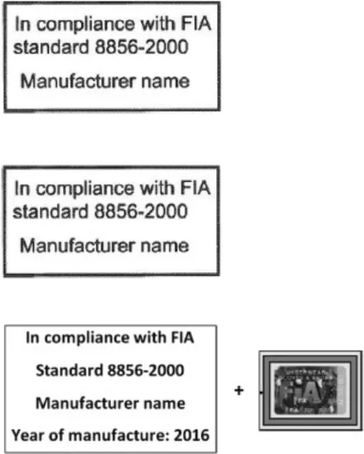</figure>
<figure><span class="pagemark" id="p10">P.10</span>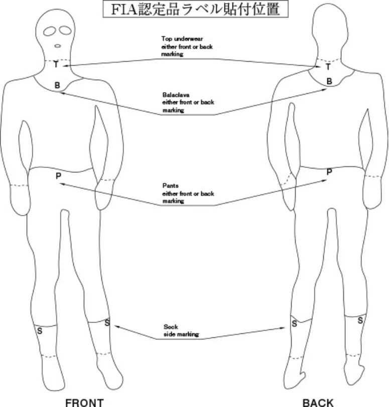</figure>
<p>（2015年12月31日までのラベル貼付位置）</p>
<figure>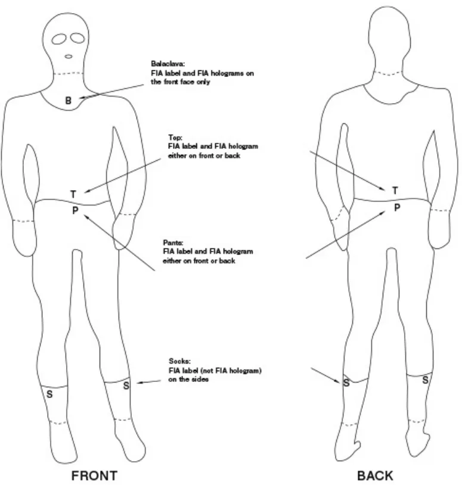</figure>
<p>（2016年１月１日以降のラベル貼付位置）</p>
<figure><span class="pagemark" id="p11">P.11</span>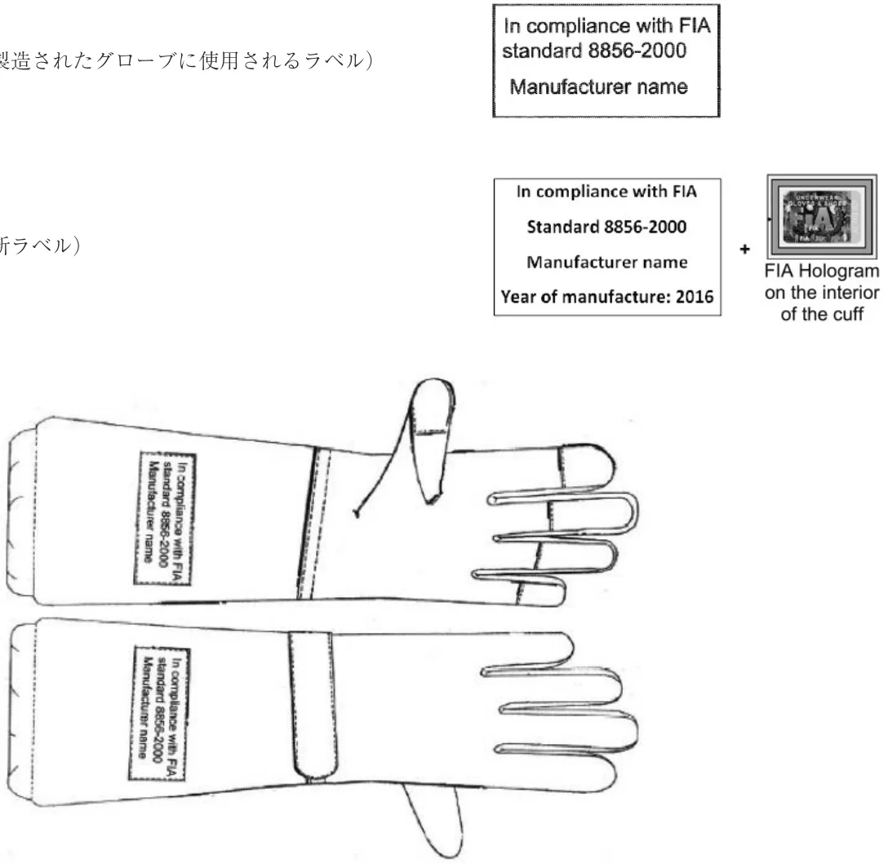</figure>
<p>（2015年12月31日までに製造されたグローブに使用されるラベル）</p>
<p>（2016年１月１日以降の新ラベル）</p>
<p>ＦＩＡ基準8856-2018：</p>
<p>耐火炎レーシングシューズ、耐火炎レーシンググローブ、耐火炎バラクラバ、耐火炎アンダーウェア、防水ウェア、冷却アンダーウェア</p>
<figure>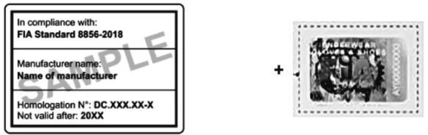</figure>
<p>耐火炎ソックス</p>
<figure>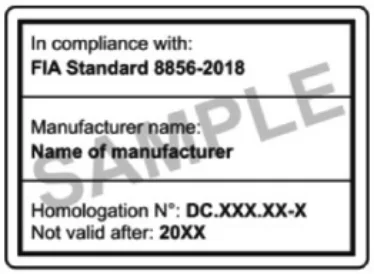</figure>
<figure><span class="pagemark" id="p12">P.12</span>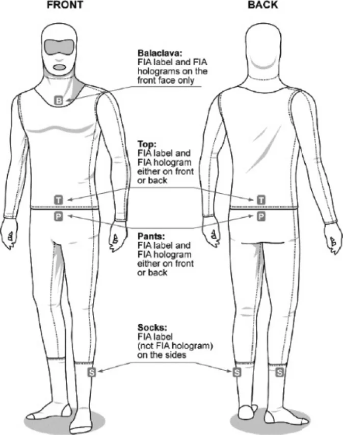</figure>
<h5 id="頭部および頸部の保護装置-システム">１０．頭部および頸部の保護装置（ＦＨＲシステム）</h5>
<p>１）ＪＡＦあるいはＦＩＡによって認められない限り、頭部や頸部の保護を意図してヘルメットに装着するいかなる装置の着用も禁止される。</p>
<p>２）すべてのレース競技においては、国際モータースポーツ競技規則付則Ｌ項に従い、ＦＩＡ基準8858に従い公認されたＦＨＲシステムの着用が義務付けられる。</p>
<p>【参考】　国際モータースポーツ競技規則付則Ｌ項（抜粋）：</p>
<h3 id="第-章-ドライバーの装備品">第３章　ドライバーの装備品</h3>
<h5 id="第-条-前方への当部の動きの抑制-FHR">第３条　前方への当部の動きの抑制（FHR）</h5>
<p>３.１）当該装置がFIA基準8858に従って公認されない限り、国際競技において、頭部や頸部の保護を意図してヘルメットに装置するいかなる装置の着用も禁止される。公認されたFHRシステムはFIAテクニカルリストNo.29に掲載される。HANS襟部の最小角度は水平から６０°とする。</p>
<p>　ドライバーとtheHANS® yoke間に使用されるいかなるパッドも、ドライバーが全てを装備しハーネスを締め車両に着座した時に１５ｍｍ厚を超えるものであってはならない。パッドはISO15025規格に合致した耐炎性（難燃性）素材で覆われていなければならず、theHANS® yokeの両端から８ｍｍを超える幅があってはならない。</p>
<p>　すべての国際格式競技会において、ドライバーおよびコ・ドライバーはFIA承認のFHRシステムを着用しなければならない。ただし、下記の例外あるいは規則が適用される。</p>
<p>FIA承認のFHRシステムの着用は、</p>
<p>ａ）ピリオドＧ以降のフォーミュラ１車両においては、FIA安全委員会発行の書面による特別措置を取得している場合を除き、義務づけられる。</p>
<p>ｂ）その他のヒストリック車両については推奨される。</p>
<p>ｃ）代替エネルギー車両の次のカテゴリーについては義務づけられない：Ⅰ、Ⅲ、ⅢＡ、Ⅳ、Ｖ電気カート、Ⅶ、</p>
<p>Ⅷ</p>
<p>ｄ）2006年1月1日以前に発行されたテクニカルパスポートを有するカテゴリーⅡ、Ｖ、Ⅵの代替エネルギー車両については推奨される。</p>
<p>技術的な理由により、FIA承認のFHRの着用が不可能なその他の車両については、FIA安全委員会に対し特例を申請することが可能である。</p>
<h5 id="使用の条件"><span class="pagemark" id="p13">P.13</span>３.２）使用の条件</h5>
<p>FHRシステムは、以下の表に従い、FIA承認品とのみ着用されなければならない。</p>
<div class="tablewrap"><table><tr><td>ヘルメット（２）</td><td>テザーシステム
（テザー、テザー留めおよびヘルメット固定点）</td></tr><tr><td>FIA 8860（テクニカルリストNo.33、 およびNo.69）
FIA 8859（テクニカルリストNo.49、 およびNo.107）</td><td>FIA 8858（テクニカルリストNo.29）</td></tr></table></div>
<p>⑵上記１.１項に従い、各選手権においてヘルメットの着用が義務づけられる。</p>
<p>FHR装置は以下に従って装着されなければならない：</p>
<p>ａ）「Guide and installation specification for HANS® devices in racing competition（レース競技におけるＨ ＡＮＳ®装置のガイドと導入仕様）」</p>
<p>または</p>
<p>ｂ）「Guide and installation specification for Hybrid &amp; Hybrid Pro devices in racing competition（レース競技におけるＨｙｂｒｉｄ ＆ Ｈｙｂｒｉｄ Ｐｒｏ装置のガイドと導入仕様）」３.３）ＦＩＡ基準8858-2002、8858-2010、8859-2015、8859-2024、8860-2010および8860-2018適合品との互換性および許される使用</p>
<p>　上記の表に示される通りに使用される場合は、FIA基準8858-2002、8858-2010、8859-2015、8859-2024、</p>
<h5 id="8860-2010-および8860-2018は有効である">8860-2010、および8860-2018は有効である。</h5>
<footer class="docfoot">自動変換のため誤りが含まれる可能性があります。競技における判断は必ず <a href="https://motorsports.jaf.or.jp/-/media/1/3375/3379/3400/3462/3464/3485/jaf_05_saisoku_race_soubi_20260101.pdf" rel="nofollow">JAF の原本 PDF</a> をご確認ください。<br>原本: レース競技に参加するドライバーの装備品に関する細則_20260101（JAF） ／ 自動変換 2026-09-09 ／ パイプライン 0.2.0 ／ <a href="/">検索して読む</a></footer>
</article></body></html>